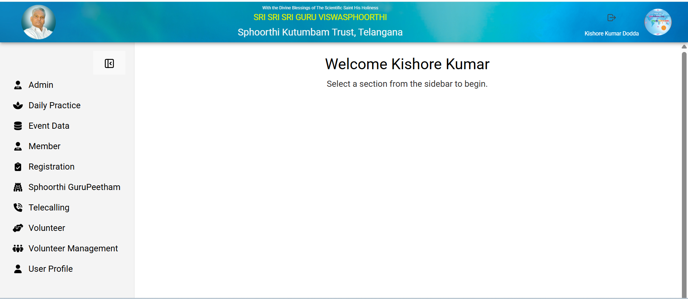
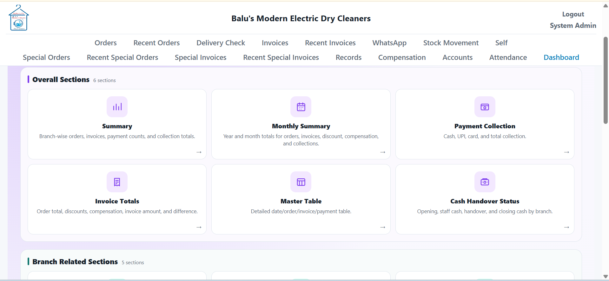
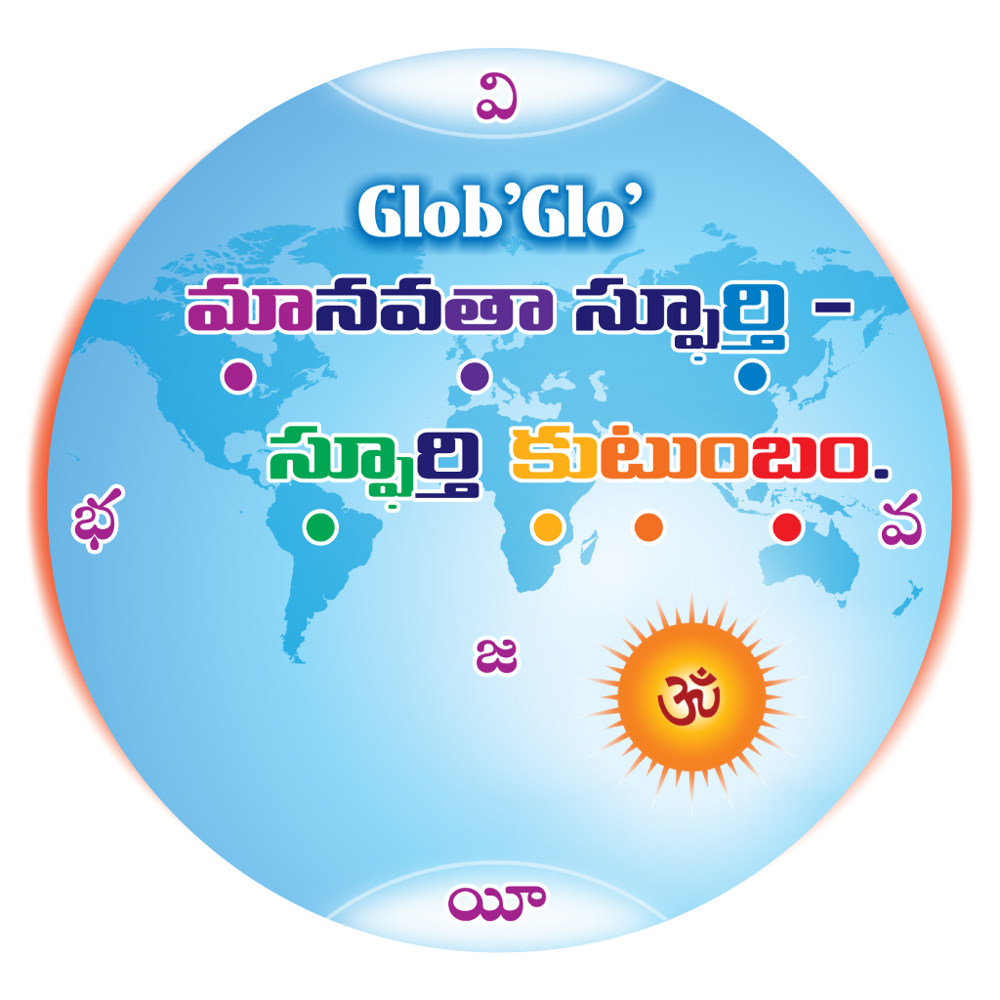
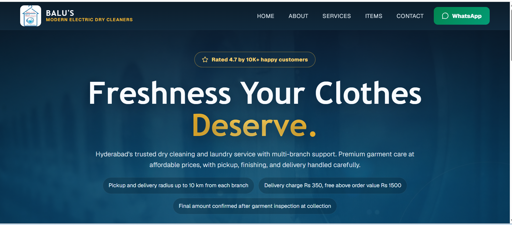

Business Systems
CRM, HR, accounts, inventory, attendance, reporting, sales workflows and operational management systems.

I provide structured digital solutions for businesses, institutions, trusts and NGOs - focused on operational efficiency, system reliability and long-term scalability.
From public-facing websites to internal business platforms, I build practical solutions that help organizations work better, communicate clearly and scale with reliable support.
CRM, HR, accounts, inventory, attendance, reporting, sales workflows and operational management systems.
Professional business websites and public platforms designed for modern digital presence, service information and online visibility.
Android and field applications connected to real business and organizational systems, including field-level access.
Digital workflows, notifications and integrations that reduce repetitive manual work and improve customer or team communication.
Hosting, deployment, infrastructure and ongoing system support for reliable operation.
Practical AI-assisted capabilities that support workflows, content work and day-to-day business operations.
A selection of digital platforms and applications built to solve practical organizational and business needs.

CRM · Operations · MobileA centralized platform for managing volunteers, events, registrations, visitors, teams, reporting and communication across multiple operational zones, with a companion Android app for field-level access.
View Android app ↗
Business System · ERP · AutomationA business management platform supporting 10 branches with orders, invoices, role-based access, attendance, payroll and automated WhatsApp customer notifications.
View solution ↗
Public Platform · MultilingualA Telugu-English public platform with dynamic event, image, audio and media content, together with a companion Android application featuring audio playback, daily quote sharing and push notifications.
Visit website ↗
Public Website · Local BusinessA responsive public-facing website for a multi-branch laundry and dry-cleaning business, giving customers clear service information, branch details and ways to connect with the business.
Visit website ↗A responsive business website with a mobile-friendly interface for presenting the organization's services, service areas and contact information clearly.
Visit website ↗Engagements are requirement-driven and scope-defined. Every project is planned, executed and delivered with a focus on stability, usability, measurable outcomes and long-term scalability.
Understand the organization, users, requirements, existing operational workflow and measurable outcomes.
Structure the user experience and system around how the organization actually operates.
Develop the web, mobile, backend and integrations as a connected digital solution.
Deploy the system, keep it reliable and provide ongoing maintenance, security support and operational continuity when required.
I work with businesses, institutions, trusts, NGOs and growing organizations seeking dependable software to modernize operations and scale efficiently.
Tell me what you're trying to improve, build, or automate. Let's discuss the right digital solution, scope and support model for your organization.